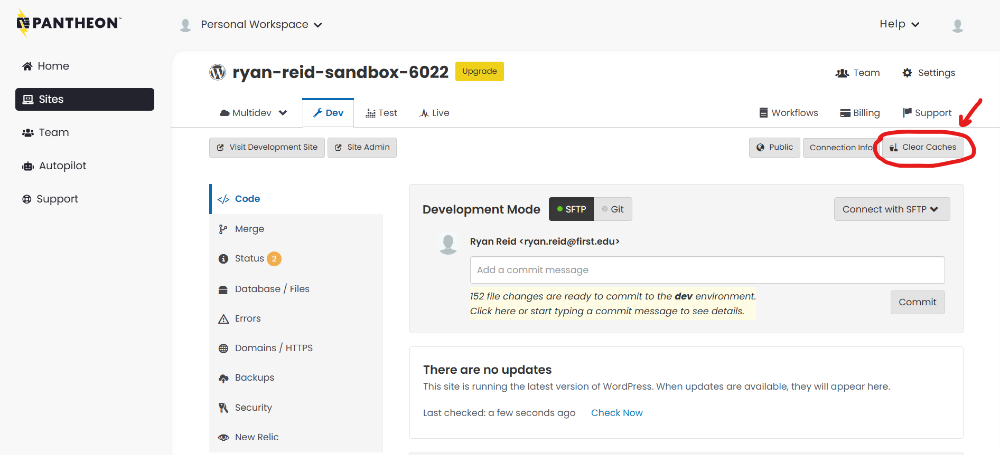

Option 1: Clearing the Site Caches in Pantheon
-
First, log into Pantheon.io.
After logging in, navigate to the Sites tab in the navigation sidebar, and open up the Site Dashboard for the site that is behaving badly.

Log in, navigate to the Sites tab, and click on the site you want to fix -
Now you should be on your Pantheon Site Dashboard (different from your WordPress Site Dashboard).
Locate the button at the far right that says "Clear Caches".
Click the button.
After a couple of seconds, the web server cache on your site should be reset, and your site should now be viewable in all its glory!
Location of the "Clear Caches" button